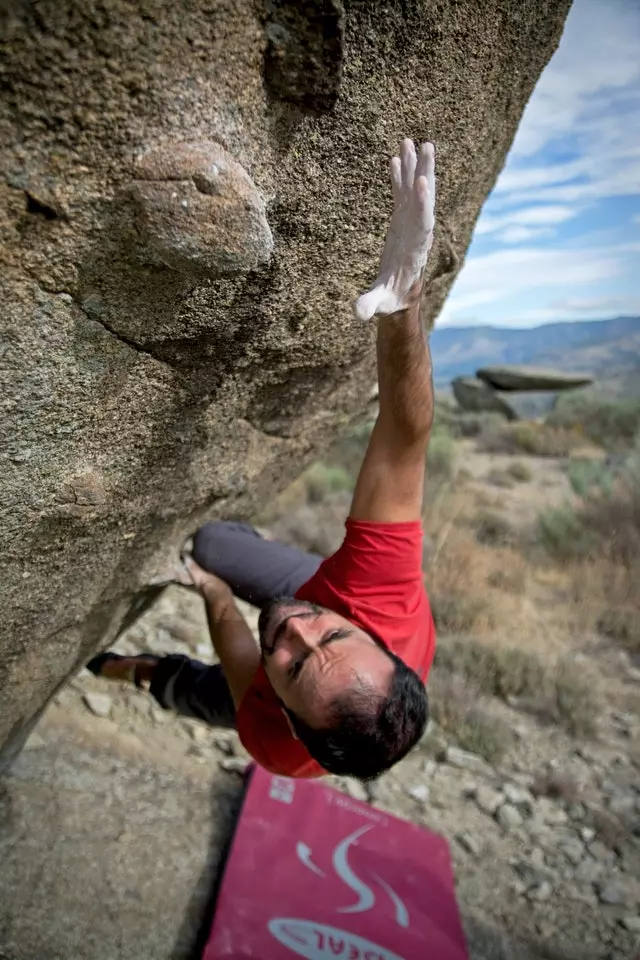

Projekt strony i wykonanie: Kacper Kwinta

Aby zwiększyć pewne wartości siły czy wytrzymałości potrzebujemy ok. 2-3 treningów tygodniowo, wszystko zależy od poziomu wytrenowania osoby. Sesje powinny być wystarczająco długie i skupione tylko na jednym bodźcu.
 Po jakim czasie umiejętności spadają?Wszystko jest zależne od naszego ciała i wytrenowania ale mniej więcej wiemy ile to wynosi.
Siła maksymalna ok. 25 dni
Wytrzymałość tlenowa ok. 25 dni
Wytrzymałość siłowa ok. 14 dni
Moc ok. 5 dni
Najlepszym sposobem jest sprawdzić to na sobie i dostosować do planu treningowego.